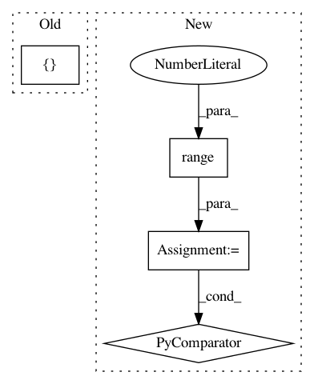

2b7f4471e764dd4b1a924837b6f515ad7e8a294a,coremltools/converters/nnssa/coreml/ssa_converter.py,SSAConverter,_convert_topk,#SSAConverter#Any#,1808
Before Change
input_nodes, input_names, input_types = self._get_input_tensors(node)
k = input_nodes[1].value.val
output_names = [node.name, node.name + "_indices"]
layer = self._get_builder().add_topk(
name=node.name,
input_names=[input_names[0]],
output_names=output_names,
After Change
input_nodes, input_names, input_types = self._get_input_tensors(node)
k = input_nodes[1].value.val
output_names = [(node.name + "_" + str(i)) for i in range(2)]
layer = self._get_builder().add_topk(
name=node.name,
input_names=[input_names[0]],
In pattern: SUPERPATTERN
Frequency: 3
Non-data size: 4
Instances
Project Name: apple/coremltools
Commit Name: 2b7f4471e764dd4b1a924837b6f515ad7e8a294a
Time: 2019-10-03
Author: gdawer@apple.com
File Name: coremltools/converters/nnssa/coreml/ssa_converter.py
Class Name: SSAConverter
Method Name: _convert_topk
Project Name: rail-berkeley/softlearning
Commit Name: 7856d22b09561e33522bdc0bd00218ae75b84bd7
Time: 2018-09-09
Author: kristian.hartikainen@gmail.com
File Name: examples/multigoal_ray.py
Class Name:
Method Name: run
Project Name: rail-berkeley/softlearning
Commit Name: 7856d22b09561e33522bdc0bd00218ae75b84bd7
Time: 2018-09-09
Author: kristian.hartikainen@gmail.com
File Name: examples/multigoal_sac.py
Class Name:
Method Name: run